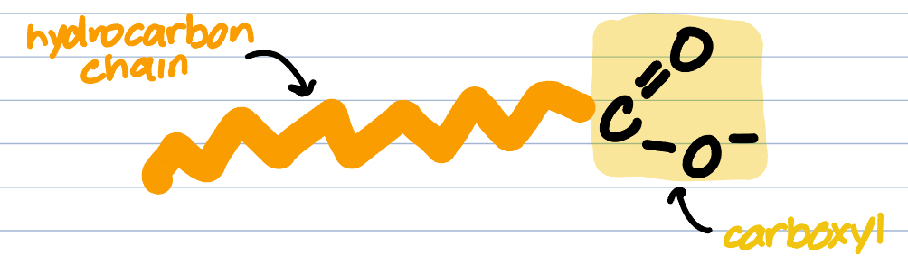
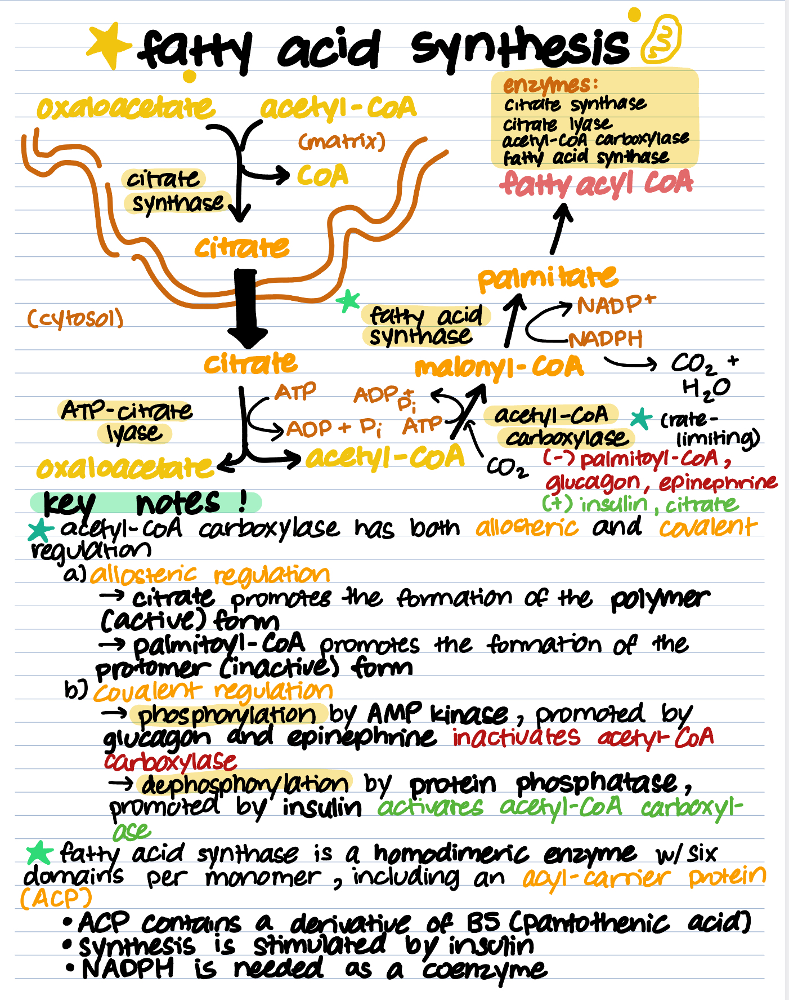
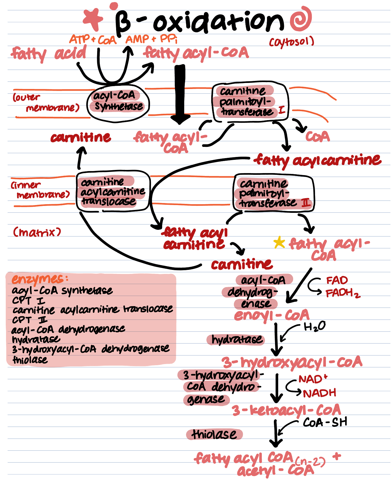

Let's talk about fats! Fatty acids are another form of energy storage, that store even more energy than glycogen! Similar to glycogen metabolism, the two fatty acid metabolism forms are fatty acid synthesis and fatty acid breakdown (beta-oxidation). They are also reverses of each other by definition. Keep scrolling to find out more about our energy storage molecules.
| Fatty acids are a class of lipids hydrophobic carbon chains with a negatively charged carboxyl group at its end. Three fatty acid chains and a glycerol molecule can come together to form a triacylglycerol, the major form of energy storage in the body. They can be classified as essential or nonessential, short, medium, or long chain, and saturated or unsaturated. |

Fatty acid synthesis is the process of creating fatty acids, using oxaloacetate as the substrate. It takes place in the cytosol, however, the first step, which converts oxaloacetate to citrate, occurs in the mitochondrial matrix. It produces palmitate as a product. The main enzymes are citrate lyase and acetyl-CoA carboxylase.
Beta oxidation is fatty acid degradation, using fatty acid chains as the substrate, usually palmitoyl-CoA (the longest fatty acid chain our body can produce, which is 16C long). In most cells, this process follows the Krebs Cycle to generate more energy. It is important to note that this reaction takes place in the mitochondria, however, the fatty acid must use the carnitine shuttle to enter the matrix. Scroll to the diagram at the end of this page to see how it works. Finally, the beta-oxidation process releases fatty-acyl CoA (minus 2 carbons) and acetyl-CoA, as products. The process continues until all of the palmitoyl-CoA is broken down into acetyl-CoAs.
Fatty acid synthesis and beta-oxidation are reverse regulated. The main activator of fatty acid synthesis is insulin, and the main inhibitor is glucagon. The opposite is true for beta-oxidation, which occurs in the fasting state-- thus it is activated by glucagon. Let's take a look at some of the key enzymes the means of regulation of them.
| Enzyme | Reaction/Process | Activator | Inhibitor |
|---|---|---|---|
| Acetyl-CoA carboxylase | Fatty acid synthesis (acetyl-CoA → malonyl-CoA) | Citrate, insulin | long chain fatty acyl-CoA, glucagon/epinephrine |
| Fatty Acid synthase | Fatty acid synthesis (malonyl-CoA → palmitate) | Citrate, insulin | long chain fatty acyl-CoA, glucagon/epinephrine |
| CPT-1 | Beta-oxidation (fatty acids → fatty acyl-carnitine | -- | malonyl-CoA |
Check out these diagrams, outlining the full picture of the pathways.

